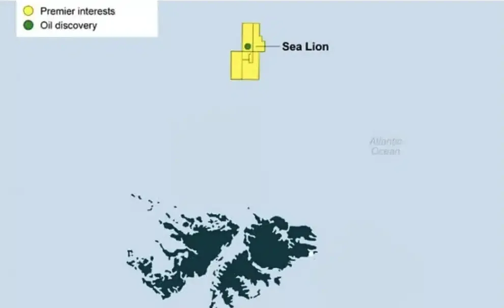

Project Sea Lion: England and Israel Go After the Oil in the Malvinas
The Sea Lion oil development, operated by Israel's Navitas and Britain's Rockhopper, already has a final investment decision and targets production in 2028. Argentine judicial inaction is, in effect, enabling a foreign oil enclave in the South Atlantic.

Sovereignty — GLOBALpatagonia Report
The calendar reads 2026, but for Argentina the chronicle of a foretold loss is written in the present tense in the South Atlantic. The Sea Lion oil project, operated by Israel's Navitas Petroleum and Britain's Rockhopper Exploration, has moved beyond exploration to become a concrete development, with an approved final investment decision (FID) and commercial production targeted for the first quarter of 2028.
The underlying question today is: how do you defend sovereignty over an occupied territory when the diplomatic and judicial inaction of Argentina's own government enables, de facto, its consolidation as a foreign oil enclave? For us, the Malvinas Islands are not a remote dot on the map; they are a constitutive part of Patagonia, and the illegal extraction of their resources is therefore a direct attack on our heritage and our geopolitical standing.
1. The Sea Lion Project: dimensions of a programmed plunder
To grasp the scale of the dilemma, it is crucial to measure what is at stake. The Sea Lion field, in the North Malvinas Basin some 220 kilometres from the archipelago, is no minor project. Proven and probable (2P) reserves reach 110 million barrels, with contingent resource potential exceeding 917 million barrels across the full field.

The scale is such that, according to a document from the Malvinas' own colonial government, Sea Lion alone would double the islands' Gross Domestic Product (GDP), relegating fishing to a secondary role as their main source of income. The fiscal projections are stark: by 2034, the local government's annual revenue from taxes and royalties could reach £280 million, a figure that would surpass what the United Kingdom itself collects in the North Sea by that same date.
In practical terms, this means that the Argentine oil extracted illegally will not only enrich foreign corporations but will finance the administrative and military structure of the colonial enclave, consolidating its autonomy, increasing its population and making any prospect of a sovereign negotiation ever more remote.
2. The foreign-policy paradox: verbal condemnation vs. judicial inaction
Javier Milei's administration is caught in an untenable contradiction. On the one hand, it has issued statements of repudiation, calling the activities "unilateral and illegitimate" and invoking UN Resolution 31/49, which prohibits unilateral changes to the islands' status quo. Foreign Minister Pablo Quirno has taken this claim to international forums such as the OAS and the UN Decolonization Committee.
Yet the diplomatic discourse runs into a wall of judicial and administrative inaction. Here lies the crux of the matter. The government has Law 26,659, which declares any unauthorized hydrocarbon activity on the Argentine continental shelf illegal and provides for severe sanctions. More striking still: this law was already applied against Navitas Petroleum in 2021, when Alberto Fernández's government barred it for twenty years from operating in the country for exploring without authorization in the same North Malvinas Basin. The legal mechanism exists, has worked, and holds a precedent against the very company now leading the project.
Despite this, Milei's government has confined itself to formal protests and avoided opening a new administrative case or a lawsuit in the Federal Court of Río Grande —the court with territorial jurisdiction— to halt the advance. This political choice not to apply the law is a form of complicity. When warning is chosen over sanction, the State does not exercise its sovereignty; it dilutes it. The opposition, through legislators such as Guillermo Michel and Kelly Olmos, has denounced this "inaction," which reflects a foreign policy "reluctant to confront these international powers," in a clear reference to the government's alignment with Israel and its pursuit of rapprochement with the United Kingdom.
3. The Israel factor and the global financial network
The presence of Navitas Petroleum adds a layer of geopolitical complexity. The Israeli company, headquartered in Herzliya and listed on the Tel Aviv Stock Exchange, is the project's majority operator. Its CEO, Amit Kornhauser, has told investors that the project is advancing with the "full support" of British authorities and without "any interference" from the Argentine government, suggesting that, in practice, Milei's government is not seen as a real obstacle.
Although the Israeli State has declared Navitas a private company, the connection runs deep. The firm depends on an ecosystem largely regulated and financed by Israeli pension funds and institutions, which gives the State regulatory and political influence over its operations. That is why the Tierra del Fuego government's complaint to the Israel Securities Authority is a shrewd move: it seeks to expose the legal and geopolitical risk Navitas is not disclosing to its investors, applying pressure from the heart of its financial structure.
The project, moreover, is not only British-Israeli. As analyst Bernabé Malacalza has noted, the financing comes from Wall Street and major investment funds such as BlackRock and Vanguard, integrating Sea Lion into the Western global energy-financial network. This transnational power structure means Argentina's challenge is not merely bilateral with the United Kingdom, but against a web of economic interests that see the South Atlantic as a new extraction frontier.
4. Consequences for Patagonia and the region
The impact of the Sea Lion project goes beyond the economic and the legal to become an event of deep regional resonance. For Patagonia, the loss of sovereignty over a strategic resource in its own maritime basin is a hard blow to its standing as an energy power. The central government's inaction sends a dangerous message: that the resources of the South Atlantic are available to whoever has the power and the will to exploit them, without the Argentine State putting up an effective barrier.
The transformation of the Malvinas into an "oil state" under British control, with a self-sustaining economy, consolidates the occupation and turns it into an even more strategically relevant actor for NATO and for control of Antarctica, another enclave of infinite natural resources. The dilemma for the country is therefore existential: either sovereignty is exercised with every legal and diplomatic tool available, or one passively watches the consolidation of a fait accompli that will turn the historic claim into a mere diplomatic footnote.
Conclusion: a law that is not applied is a law surrendered
The Sea Lion situation is not an unsolvable dilemma but a problem that requires political will. Argentina has the historic right, the law, the judicial precedent and the proper jurisdiction to confront the plunder. The Tierra del Fuego government has taken a bold step by reporting Navitas to the Israeli regulator, showing that the fight for sovereignty admits multiple fronts.
The national government's inaction, however, is a choice. It is not an oversight. It is a political decision that, under the pretext of a geopolitical alignment, is allowing the illegal extraction of resources belonging to all Argentines. Every barrel extracted from the Malvinas will be one more proof that failing to defend the law is, quite simply, to surrender it.